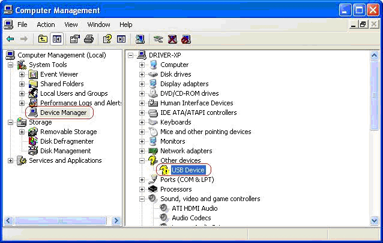

Drivers
Driver o Controlador de Dispositivo
Es un programa que permite al SO interaccionar con un periférico (impresora, scaner, etc)
o dispositivo hardware (tarjeta gráfica, tarjeta de sonido, modem, etc), haciendo una
abstracción del mismo y proporcionando una interfaz para poder utilizarlo.
Le indica al SO como controlar y comunicarse con un dispositivo particular.

Tipos de Drivers
- Existen tantos tipos de controladores como tipos de periféricos
- Puede haber más de un controlador para un mismo dispositivo
Drivers: Actualización
Los fabricantes de hardware suelen actualizar los drivers para otorgar más funcionalidades, mejorar el rendimiento o aumentar las medidas de seguridad con la finalidad de corregir errores o vulnerabilidades que podrían comprometer el equipo de los usuarios.
Windows
Administrador de Dispositivos
El usuario puede:
- Comprobar si el funcionamiento de los dispositivos es correcto
- Actualizar el software de controlador o Driver
- Modificar o establecer propiedades a un dispositivo
- Habilitar o deshabilitar dispositivos
Administrador de Dispositivos

Administrador de Dispositivos
| Simbolo | Definición |
|---|---|
 |
Ocurrió un problema. Muestra un código de error del dispositivo. |
| El dispositivo está desactivado (está presente físicamente, consume recursos, pero no tiene un controlador cargado en modo protegido. | |
 |
Configuración manual en lugar de automática. |
 |
El controlador específico del dispositivo no está disponible y se instalo un controlador compatible. |
Linux
Administrador de Dispositivos
- Los drivers son módulos del Kernel
- Con el comando lsmod
- Desde el visor de hardware del entorno gráfico
¿Dudas, Preguntas, Comentarios?